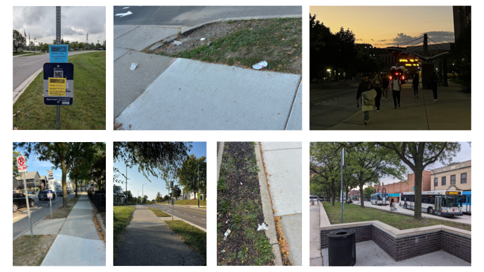
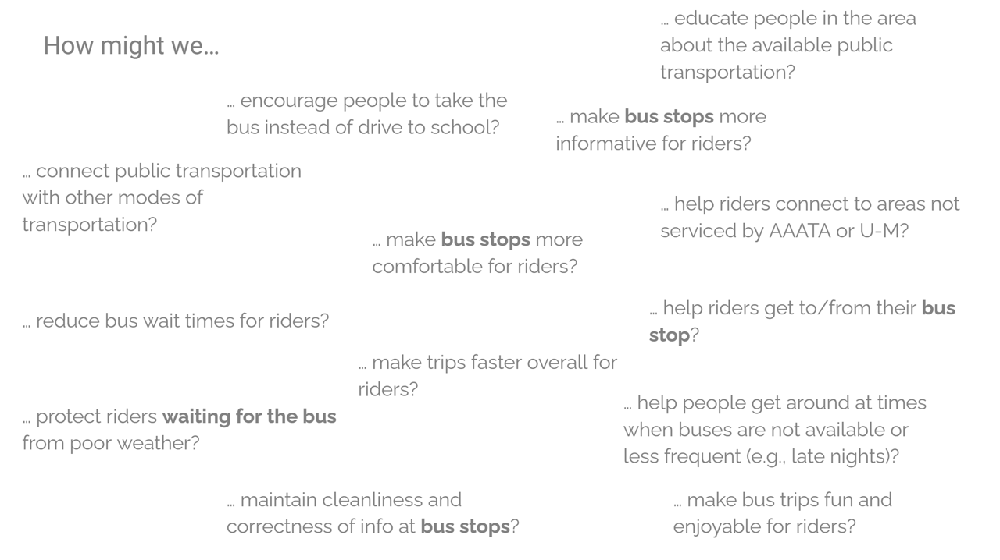

Photo Ethnography
As part of our design research, we conducted photo ethnography at various Ann Arbor bus stops to visually document real-world rider experiences.
Through unobtrusive observation and photography, we captured recurring challenges such as inadequate shelter, poor signage visibility, and bike-pedestrian conflicts. This qualitative data allowed us to understand not just functional gaps, but also behavioral patterns—such as how riders improvise seating or position themselves for shade.
These visual insights grounded our design direction in context-rich, lived experiences that numbers alone couldn’t capture. They served as a key foundation for generating ideas that are practical, human-centered, and responsive to the real needs of the transit environment.
